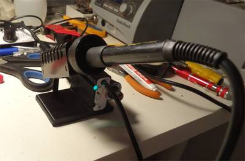
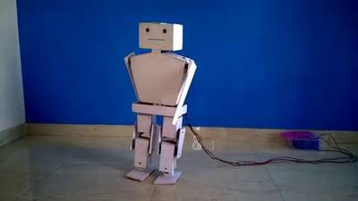

2016-01-21 - Nº 38

Editorial
Aqui está a Newsletter Nº 38 no seu formato habitual. Agora às quintas-feiras. Se gostar da Newsletter partilhe-a!
Todas as Newsletters encontram-se indexadas no link.
Esta Newsletter tem os seguintes tópicos:
Esta semana ficamos a saber que afinal a Atmel foi comprada pela Microchip e não pela Dialog Semiconductor. Foi encontrado o maior número primo com cerca de 22 milhões de dígitos e que é um número "Mersenne". A Samsung começou a produzir DRAM de 4-gigabyte baseada na tecnologia de segunda geração HBM2 para ser usada em computação de alto desempenho.
Esta semana apresentamos diversos projetos de maker e na rubrica "Documentação" apresentamos quatro livros (eBooks) que podem ser descarregados livremente e que esta semana são sobre o Projecto Oberon: O desenho de um sistema operativo, de um compilador e de um computador, um livro sobre Algoritmos, um sobre VHDL e por fim um livro sobre sistemas operativos e middleware. Falamos também em duas revista de electrónica: a newelectronics e a Electronics Maker.
 João Alves ([email protected])
João Alves ([email protected])
O conteúdo da Newsletter encontra-se sob a licença  Creative Commons Attribution-NonCommercial-ShareAlike 4.0 International License.
Creative Commons Attribution-NonCommercial-ShareAlike 4.0 International License.
Novidades da Semana ^
Microchip Technology, Inc. Acquires Atmel
"Microchip Technology Incorporated, a leading provider of microcontroller, mixed-signal, analog and Flash-IP solutions, and Atmel Corporation today announced that Microchip has signed a definitive agreement to acquire Atmel for $8.15 per share in a combination of cash and Microchip common stock. The acquisition price represents a total equity value of about $3.56 billion, and a total enterprise value of about $3.40 billion, after excluding Atmel’s cash and investments net of debt on its balance sheet of approximately $155.0 million at December 31, 2015."
Largest Known Prime Number: 2^274,207,281-1
"The Great Internet Mersenne Prime Search (GIMPS) celebrated its 20th anniversary with the math discovery of the new largest known prime number, 274,207,281-1, having 22,338,618 digits, on a university computer volunteered by Curtis Cooper for the project. The same GIMPS software just uncovered a flaw in Intel's latest Skylake CPUs, and its global network of CPUs peaking at 450 trillion calculations per second remains the longest continuously-running 'grassroots supercomputing' project in Internet history. The new prime number, also known as M74207281, is calculated by multiplying together 74,207,281 twos then subtracting one. It is almost 5 million digits larger than the previous record prime number, in a special class of extremely rare prime numbers known as Mersenne primes. It is only the 49th known Mersenne prime ever discovered, each increasingly difficult to find. Mersenne primes were named for the French monk Marin Mersenne, who studied these numbers more than 350 years ago. GIMPS, founded in 1996, has discovered all 15 of the largest known Mersenne primes. Volunteers download a free program to search for these primes with a cash award offered to anyone lucky enough to compute a new prime. Prof. Chris Caldwell maintains an authoritative web site on the largest known primes and is an excellent history of Mersenne primes."
-
"Samsung Electronics announced that it has begun mass producing the industry’s first 4-gigabyte (GB) DRAM package based on the second-generation High Bandwidth Memory (HBM2) interface, for use in high performance computing (HPC), advanced graphics and network systems, as well as enterprise servers. Samsung’s new HBM solution will offer unprecedented DRAM performance – more than seven times faster than the current DRAM performance limit, allowing faster responsiveness for high-end computing tasks including parallel computing, graphics rendering and machine learning."
Ciência e Tecnologia ^
Zinnia Flowers Starting to Grow on the International Space Station
"Zinnia flowers are starting to grow in the International Space Station's Veggie facility as part of the VEG-01 investigation. Veggie provides lighting and nutrient supply for plants in the form of a low-cost growth chamber and planting "pillows” to provide nutrients for the root system. These plants appear larger than their ground-based counterparts and scientists expect buds to form on the larger plants soon."
‘Outsiders’ Crack 50-Year-Old Math Problem

"In 2008, Daniel Spielman told his Yale University colleague Gil Kalai about a computer science problem he was working on, concerning how to “sparsify” a network so that it has fewer connections between nodes but still preserves the essential features of the original network. Network sparsification has applications in data compression and efficient computation, but Spielman’s particular problem suggested something different to Kalai. It seemed connected to the famous Kadison-Singer problem, a question about the foundations of quantum physics that had remained unsolved for almost 50 years. Over the decades, the Kadison-Singer problem had wormed its way into a dozen distant areas of mathematics and engineering, but no one seemed to be able to crack it. The question “defied the best efforts of some of the most talented mathematicians of the last 50 years,” wrote Peter Casazza and Janet Tremain of the University of Missouri in Columbia, in a 2014 survey article."
Spintronics, low-energy electricity take a step closer
"Topological insulators are recently discovered materials that differ from the familiar insulators and semiconductors in many ways. While topological insulators are fascinating for fundamental physics, they could one day enable electricity with less energy loss, spintronics, and perhaps even quantum computing. Combining theory with experiment, EPFL scientists have now identified bismuth iodide as a topological insulator and the first representative of a whole new structural class of materials that could propel topological insulators into applications. The work, which was carried out within the framework of the EPFL-led NCCR Marvel project, is published in Nature Materials."
Documentação ^
A documentação é parte essencial do processo de aprendizagem e a Internet além de artigos interessantes de explorar também tem alguma documentação em formato PDF interessante de ler. Todos os links aqui apresentados são para conteúdo disponibilizado livremente pelo editor do livro.
Livros
Project Oberon: The Design of an Operating System, a Compiler, and a Computer by Niklaus Wirth and Jürg Gutknecht
"This book presents the results of Project Oberon, namely an entire software environment for a modern workstation. The project was undertaken by the authors in the years 1986-89, and its primary goal was to design and implement an entire system from scratch, and to structure it in such a way that it can be described, explained, and understood as a whole. In order to become confronted with all aspects, problems, design decisions and details, the authors not only conceived but also programmed the entire system described in this book, and more. "
-
"This book aims to be an accessible introduction into the design and analysis of efficient algorithms. Throughout the book we will introduce only the most basic techniques and describe the rigorous mathematical methods needed to analyze them."
-
"The purpose of this book is to provide students and young engineers with a guide to help them develop the skills necessary to be able to use VHDL for introductory and intermediate level digital design. These skills will also give you the ability and the confidence to continue on with VHDL-based digital design. In this way, you will also take steps toward developing the skills required to implement more advanced digital design systems. Although there are many books and on-line tutorials dealing with VHDL, these sources are often troublesome for several reasons. Firstly, much of the information regarding VHDL is either needlessly confusing or poorly written. Material with these characteristics seems to be written from the standpoint of someone who is either painfully intelligent or has forgotten that their audience may be seeing the material for the first time. Secondly, the common approach for most VHDL manuals is to introduce too many topics and a lot of extraneous information too early. Most of this material would best appear later in the presentation. Material presented in this manner has a tendency to be confusing, is easily forgotten if misunderstood or simply is never applied. The approach taken by this book is to provide only what you need to know to quickly get up and running in VHDL. As with all learning, once you have obtained and applied some useful information, it is much easier to build on what you know as opposed to continually adding information that is not directly applicable to the subjects at hand."
Operating Systems and Middleware: Supporting Controlled Interaction
"Intended for juniors, seniors, and first-year graduate students, Max Hailperin's Operating Systems and Middleware: Supporting Controlled Interaction takes a modern approach to the traditional Operating Systems course. By using this innovative text, students will obtain an understanding of how contemporary operating systems and middleware work, and why they work that way. They will also gain practical skills including the ability to reason about and program concurrent computations, understand hardware/software interactions, use empirical measurement to guide design, and analyze system security."
Revistas
newelectronics - 16 January 2016
"New Electronics is a fortnightly magazine focusing on technological innovation, news and the latest developments in the electronics sector. Feature articles: Digital Design, Embedded Software Development, Frequency Management, Contract Manufacturing, Smart Factory"
Electronics Maker - Magazine - January 2016
"Indian R&D setups "
Modelos 3D ^
Com a disponibilidade de ferramentas que permitem dar azo a nossa imaginação na criação de peças 3D e espaços como o thingiverse para as publicar, esta rubrica apresenta alguns modelos selecionados que poderão ser úteis.
Credit card ruler (http://www.thingiverse.com/thing:1279498)
This is a simple tool that might prove useful. I remembered when I still had technical drawing classes that I once forgot my ruler and my protractor. This could have saved me. So here it is ! Sweet revenge :D
Comes in two versions, a thin and a thick one, you be the judge
No excuses now !
Customizable Cover for LCD (http://www.thingiverse.com/thing:1274664)
Designed to be glued to the front of the machine. Can customize size of the screen and borders.
Customizable Swivel Buckle (http://www.thingiverse.com/thing:1172650)
I've been looking for a easy-to-print, low-volume, low-profile snap buckle that would work scaled up to 4"... spope's swivel buckles don't scale, but the basic design kick-started my brain enough that I threw together this simplified parametric design which should do the trick (update: yup).
Update Dec 8/15: adjusted the post geometry for easier/stronger printing (tapers work better if they start a few layer off the build platform), tweaked the tooth design.
Update Dec 11/15: made customizable, minor tuning, cleaned up magic numbers
Projetos Maker ^
Diversos Projetos interessantes.
Acid Etching
"This will be a basic tutorial on how to acid etch metal with Ferric Chloride."
The Saga of the Soldering Stations

"Designing and building a temperature controller for a soldering iron might seem unusual in these days of cheap Chinese-made soldering stations. In my case, I went even further, designing three different controllers. Crazy? Well, here's the full story. "
Arduino based humanoid robot using servo motors

"This is my first humanoid robot, made by thick plastic sheet which I don't know the name of the sheet. It is available in various thickness. Here, I used 0.5mm. At now this robot can just walk when I switched ON. Now I'm working on connecting Arduino and Mobile through Bluetooth module."
Portable Ultrasonic Range Meter

"This device is a small, portable ultrasonic range meter using an ATMega328 microcontroller, an ultrasonic module and a 4x20 LCD for ranging distances in meters and inches."
90x60cm Discrete Led Scrolling Text Matrix
"This is my first instructable and I wasn't planning on doing it when I first started this project, so bear with me and any kind of flaws it may have. I first decided to do this project when I discovered how easy and cheap it is to display some scrolling text these days with just an arduino board and some led matrix. "
Home Thermostat With Arduino and Big LCD

"Replacing a standard thermostat (SIEMENS-RAA30 16GR) with a self made, arduino-based, big LCD screen is a fun project."
OscilloPhone: Use your Smartphone as an Oscilloscope / Signal Generator
"Oscilloscopes and Signal Generators are two essential electronics devices to create and test electronic circuits. Unfortunately, these devices are very expensives for students starting electronics, or makers who want use electronic circuits in their creations just once... The idea of my project is to rethink your smartphone as a portable, powerful and secured platform, able to simulate an oscilloscope and a signal generator for your electronic circuits. Here, your phone isn't just an accessorize or an ordinairy remote control : it becomes the center of the project, and a tool to help you create better things in the future."
Arduino Simon Says Game
"This is a fun project I did with my kids over the holidays. To house this game I decided to use an old iPhone 5c box. I had it just lying around and it seemed about the right size."
How to Make a MINI Spot Welder for Cheap / 12 V
"cool idea on how to make a simple welding device, a spot (contact) welding to be more exact. "
How to Make a USB Breadboard Power Supply
"I purchased many USB breadboard power supply from market but none of them fit on my bread board. Reason being non standard dimensions of breadboard. Holes are 2.54 mm apart, but total size is variable. Hence I decided to make one by myself which could fit all my breadboard. It was really simple when I realized that my computer gives me regulated 5V."
3D Printed Syringe Pump Arduino Based
"I had an idea that it would be possible to make a high quality, precision syringe pump using 3D printed parts and various extras off of eBay for much cheaper than what is commercially available today. This could be beneficial for the home scientist, small budget limited labs, people wanting to experiment with 3D printing ceramics or chocolate, and really anyone looking for a fun project or a readily hackable low cost syringe pump."
Arduino Laser Engraver Wood Design!
"A couple of months ago, there was a CNC challenge here at instructables, while checking out the entries of that contest, I saw some pretty cool engraving machines and I thought: "Why shouldn't I make my own?". And so I did, but I didn't want to make someone else's project, I wanted to make my own. And so my story began... :) This laser engraver uses a 1.8W 445nm laser module, of course, this is nothing compared to the industrial laser cutters who use lasers of (a lot) more than 50W. But this laser will do well for us. It can cut through paper and cardboard and it can engrave all kinds of wood. I haven't tested other materials yet, but I'm sure it can engrave many other materials. l will let you know! It has a large engraving surface of about 500x380mm."
Arduino Pong

"This Instructable is based on a how-to written by James Bruce"
3-fingered Arduino robot hand
"In this instructable I will explain the basics of building your own robot hand, controlled by an arduino. The hand uses a glove, outfitted with flex sensors that will capture your hand movements. The hand movements will be translated by the arduino and sent to the robot hand, which will then move in the same way you just moved your hand."
attiny2313 based electronic hourglass
"I got an arduino a long time back to play around. Made some basic projects to start with. But never quite liked using it. No, arduino is awesomely good."
Pallet Couch Thomas Dambo Style
"I make anything from furniture and interior design to massive art projects, sculptures and installations. In this "Instructables" I will show you how to make a really nice Pallet Couch. "
Building a MultiComp-based Z80
"Let’s see if we can build an FPGA-based system. The biggest challenge is that everything involved is completely different from software and hardware design. It’s a new ball game!"
OSHChip as a general purpose processor board
"The most striking thing you see is that it is the size of a 16 pin DIP, and unlike other processor boards, it is designed from the start to be compatible with the white breadboards that are commonly used by electronic hobbyists, robotics projects, and oh so many hackaday projects. The pins are directly designed to work with these bread boards, and unlike the usual pin strips found on other processor boards, they plug in easily to the bread board, and don’t damage it. Unlike other processor boards that are far larger, OSHChip can be plugged into the middle two rows of a bread board, and it doesn’t cover the connected holes that you will be connecting to."
Freescale’s sensors breakout boards
"A few more PCBs, this time for Freescale’s sensors."
€20 robot arm controlled by arduino
"In this intrsuctable I am going to show you how to make a simple robot arm. The credits for the robot arm goes to this guy: www.instructables.com/id/EEZYbotARM/ There you can see how to assemble the robot arm, unfortunaly he uses a €25,- polulu driver to control his robot arm wich makes it very expensive. I am going to show you how to control this thing with an arduino and some joysticks. To control the arm I am using some cheap joysticks from aliexpress, the part list wil be shown in step 1."
Getting started with Arduino - Two Player Arduino Pong
"In this tutorial we are going to build an arduino-based controller that we can use to control a 2 player game of pong. We are going to use a couple of dial potentiometers (turning knobs) to control the pong bats/paddles."
DemUinoPortable
"An Arduino/Sanguino micro-computer by DemeterArt."
Arduino Distance Meter
"This a project I've been working for some time now. It is a device that shows in a little LCD display the distance to the nearest object it can find, usually the floor, the ceilling and two walls or columns. So it can be so helpful to hang a picture, a shell, a light point, calculate the area of the entire wall, etc."
Portable Electric Heater/Cooler With Peltier (Thermoelectric) Module
"Stay Warm With This DIY Pocket Sized Heater Made With Homemade Parts. Carry It Anywhere on the go and stay nice and warm . 55°C - 70°C Hot Air Output At 60 Watt Power Made With Peltier Element And Old Graphics Card Fan , Run From Ac Power Adapter Or 12v Batteries !"
Student Standing Desk
"As a teacher, I follow a number of education blogs and posts about innovative classroom practices. One that has recently caught my attention is the idea of a standing desk for students. I have been using a standing desk in my classroom and in the office. The desk is not much more than a glorified table topper that allows me to stand while doing my "desk-work"."
Mini-PCIe microcontroller and make your board too
"All VIA's current ARM boards (VAB-600, 820, 1000) have an online mini-PCIe connector, and I've been planning to do something interesting with that for a long time (see this intro post from more than a year ago). Thus I'm very happy to introduce the PCIeDuino - mini-PCIe form-factor Arduino-compatible microcontroller, which can add a whole new set of I/O capabilities to these ARM "carrier boards"."
FFT On A MSP432 Launchpad
"I was inspired a while back by the simplicity of the FFT application written by Shane Ormond and featured on the 43oh blog. It was easy to duplicate and I’ve made a few changes, additions, and such that seemed worth documenting. I didn’t have a signal generator other than the 1kHz square wave on my oscilloscope and some clunky code that I wrote for a microcontroller so I ordered an inexpensive AD9850 and hooked it up to a FR6989 LP so I could use the LCD to display frequency. I’ve been pleased with the AD9850 and it is hard to beat it for the price. The sine wave is more than sufficient for my needs up to 40 MHz – I don’t see any deviation from the scope."
Arduino Relay Circuit
"The circuit is used a relay wthe arduino to control high voltage electronics."
IoT Mood Lamp From Power Socket
"One day a surface mounted power socket burned out in the room. The hot wire touched the ground pin. The socket turned black on the inside, but remained untouched on the outside. I've replaced it with a new one, and for some reason, I didn't throw away the damaged one. I started to think about what can I do with it. I realized that the holes on the socket are exactly 5 mm in diameter. What are 5 mm in diameter too? Of course, LEDs! So I cleaned the socket as I could, drop in some LEDs and other parts and turned it into an internet connected mood lamp. This guide is about how I've done."
MIAOW GPU
"MIAOW (pronounced me-ow) is an open source GPU created by the Vertical Research Group at the University of Wisconsin-Madison led by Professor Karu Sankaralingam. Based off of the publicly released Southern Islands ISA by AMD, MIAOW implements a compute unit suitable for performing architecture analysis and experimentation with GPGPU workloads. In addition to the Verilog HDL composing the compute unit, MIAOW also includes a suite of unit tests and benchmarks for regression testing."
DIY Digitized Drawing Pad
"Drawing on a computer can't match the ease and accuracy of moving around a pencil on paper in real life. A mouse or trackpad is far too cumbersome to maneuver, making even a stick figure hard to look good. But what if there was a way to map actual pencil strokes onto the computer so that you could still draw naturally AND have your creation on your screen? This is why we made Back to the Drawing Board!, a simple way to use a pen or pencil and draw on actual paper which translates your drawing on to a screen."
That's all Folks!